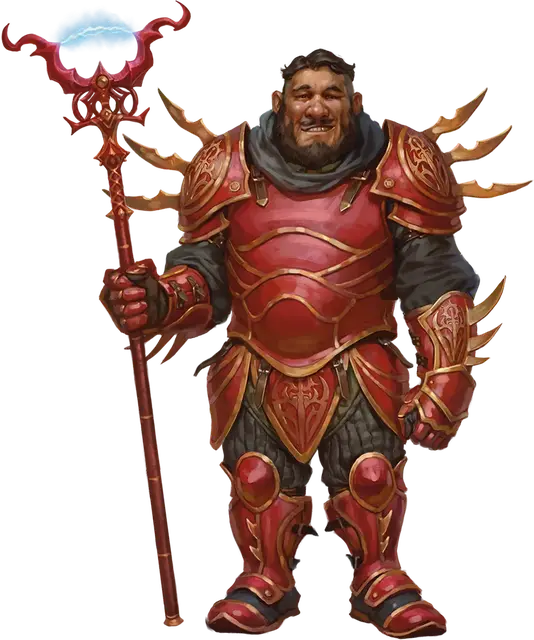

Миротворец Гармониума
Harmonium Peacekeeper
Маленький или Средний Гуманоид

Класс Доспеха 18 (латы)
Хиты 45 (7к8 + 14)
Скорость 30 футов
| мод | спас | ||
|---|---|---|---|
| СИЛ | 16 | +3 | +3 |
| ЛОВ | 10 | +0 | +0 |
| ТЕЛ | 14 | +2 | +2 |
| мод | спас | ||
|---|---|---|---|
| ИНТ | 12 | +1 | +1 |
| МДР | 14 | +2 | +2 |
| ХАР | 11 | +0 | +0 |
Навыки Восприятие +4
Чувства пассивное Восприятие 14
Языки Общий плюс один язык
Опасность 3 (700 опыта)
Бонус мастерства +2
Особенности
Тактика стаи. Миротворец совершает с преимуществом броски атаки по существу, если как минимум один союзник миротворца находится в пределах 5 футов от этого существа, и этот союзник дееспособен.
Действия
Электризованный ловец людей. Рукопашная атака оружием: +5 к попаданию, досягаемость 5 футов, одна цель. Попадание: 8 (1к10 + 3) колющего урона плюс 4 (1к8) урона электричеством. Если целью является существо Большого размера или меньше, она становится схваченной (Сл высвобождения 13). Пока захват не окончится, цель опутана и не может телепортироваться, а миротворец не может совершать атаки Электрифицированным ловцом людей, и цель получает 8 (1к10 + 3) урона электричеством в начале каждого своего хода.
Описание
Миротворцы носят отличительные красные пластинчатые доспехи и орудуют планарными ловцами людей - древковым оружием, металлические клешни которого не дают преступникам, зажатым в них, телепортироваться прочь, что делает их незаменимыми в поимке правонарушителей в Сигиле.